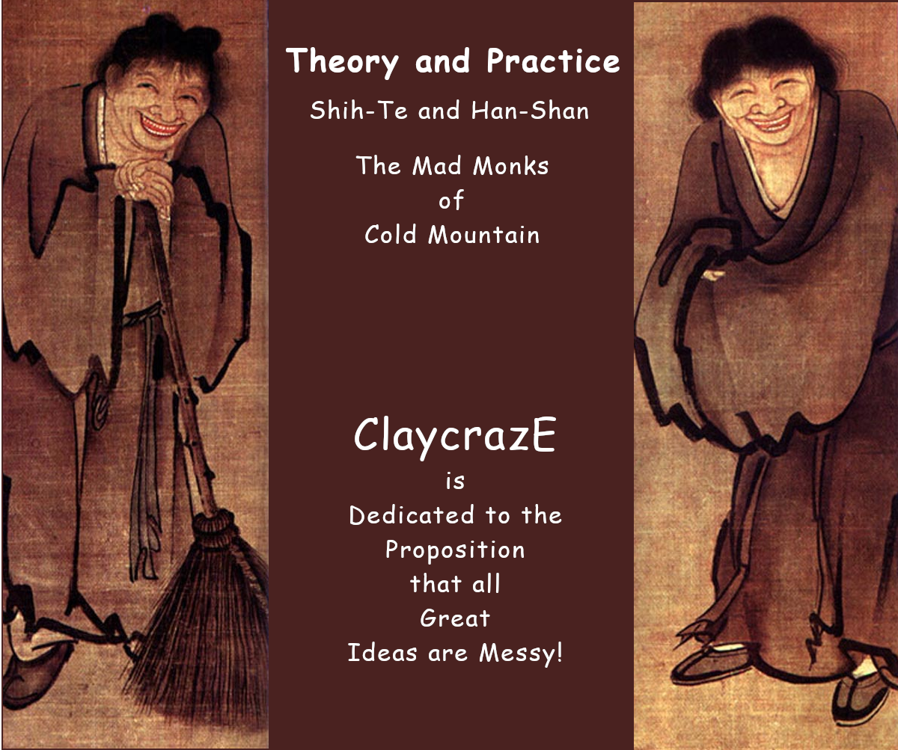

ClaycrazE
Pottery by Jim Alexander
Theory
Practice
GENE Project

Theory and Practice — Shih-Te and Han-Shan — The Mad Monks of Cold Mountain. ClaycrazE is dedicated to the proposition that great ideas are sometimes messy.